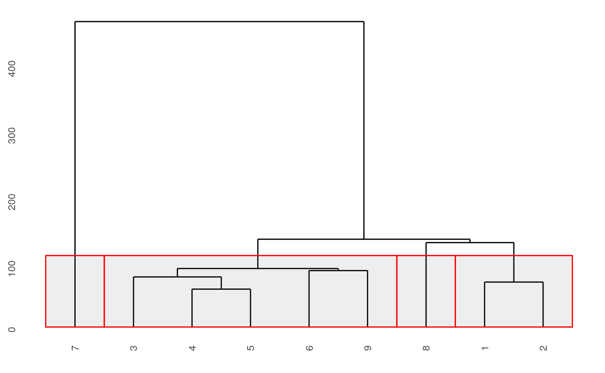
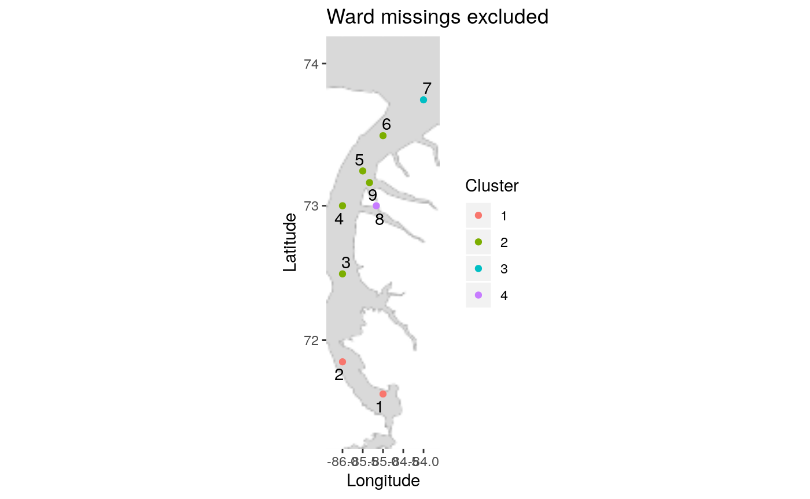
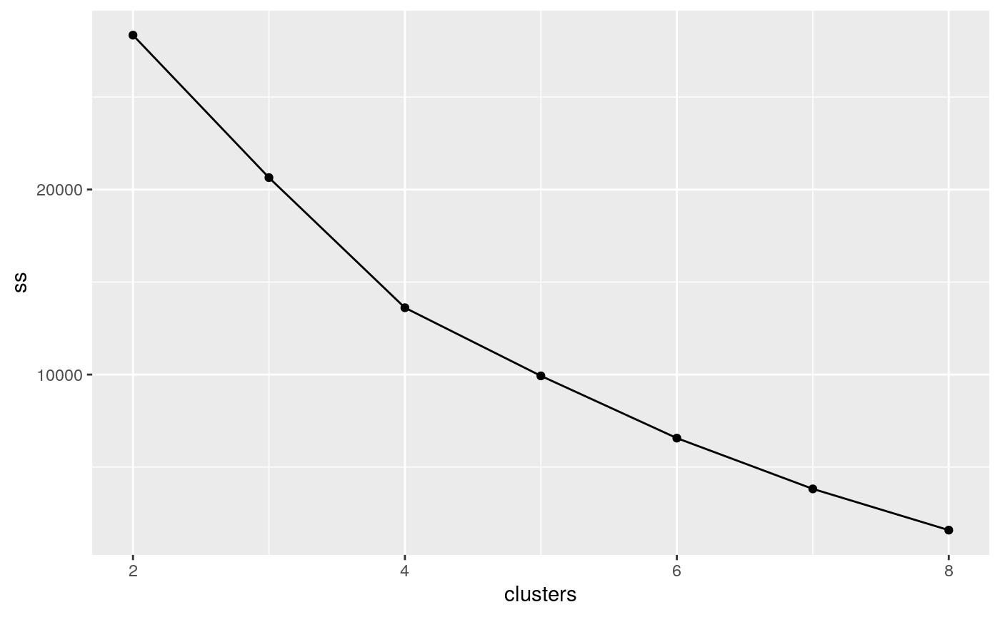
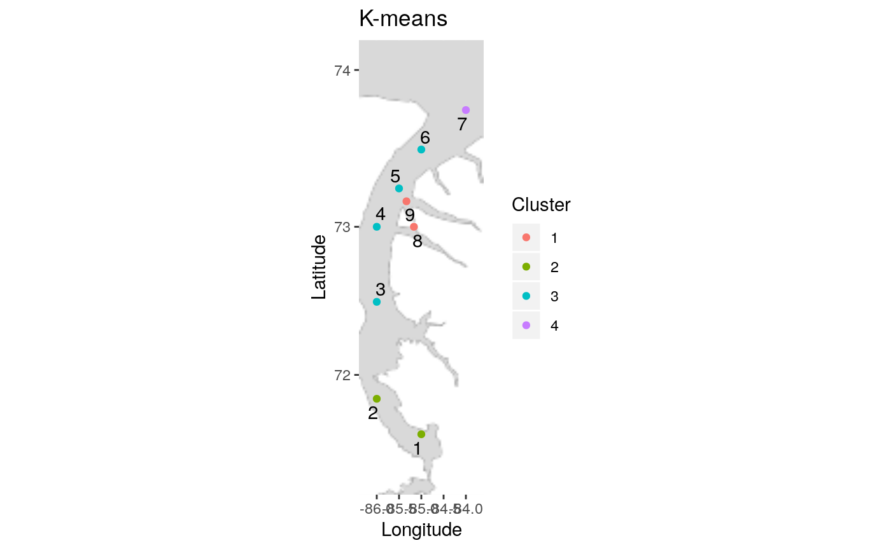
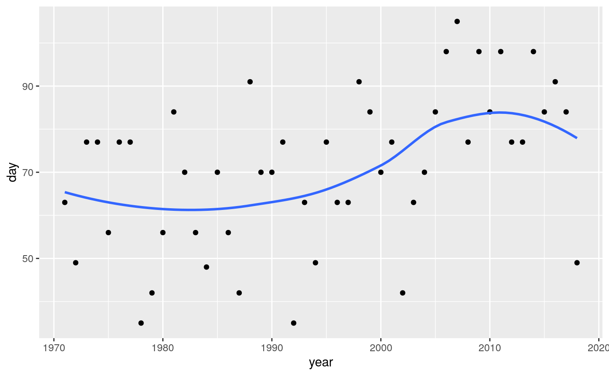
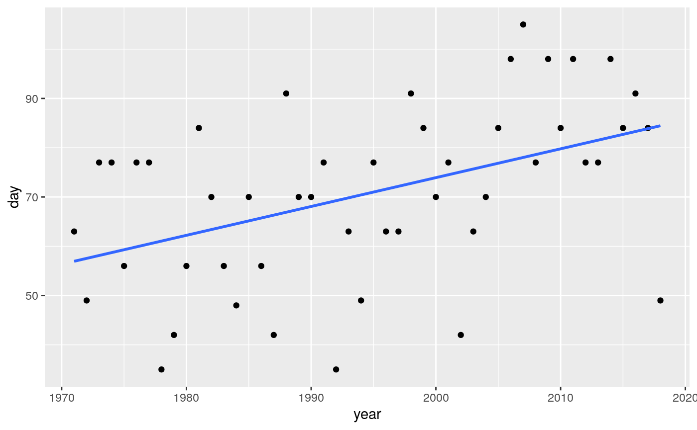

The goal of seaiceR is to simplify temporal and spatial analysis of sea ice data (for example, break-up dates for a number of years at a number of locations in a study area).
Setup
You need two data frames to start (eg. read in from spreadsheets):
- the data file, with years as rows and columns as locations, and the body of the table containing eg. the number of days between the start of the year and break-up of ice. The first column should be called
year(lowercase). - locations of points within the study area. This needs to be a data frame with columns called exactly Location, Longitude and Latitude (in some order, with initial uppercase). Longitudes are assumed to be west (so positive numbers here will be made negative for the maps).
The package includes data frames called nine_points and nine_points_locations which are real data from nine points. These data can be used to try out the package, and will be demonstrated here.
Example
The basic function that does the whole analysis for a data set is called make_everything. This has defaults, but needs input of the data frames described above plus a parameter n_cluster which is the number of clusters for the cluster analysis. The last input n_cluster must be specified by name (the function has a lot of optional inputs).
library(seaiceR)
make_everything(nine_points, nine_points_locations, n_cluster=4)
#> Source : http://tile.stamen.com/toner-lite/5/8/5.png
#> Source : http://tile.stamen.com/toner-lite/5/8/6.png
#> $temporal
#> $temporal[[1]]
#> `geom_smooth()` using method = 'loess' and formula 'y ~ x'
#> Warning: Removed 3 rows containing non-finite values (stat_smooth).
#> Warning: Removed 3 rows containing missing values (geom_point).
#>
#> $temporal[[2]]
#> Warning: Removed 3 rows containing non-finite values (stat_smooth).
#> Warning: Removed 3 rows containing missing values (geom_point).
#>
#> $temporal[[3]]
#> # A tibble: 9 x 10
#> location data z z_star ratio P_value P_value_adj P_value_2
#> <dbl> <lis> <dbl> <dbl> <dbl> <dbl> <dbl> <chr>
#> 1 1 <tib… 3.00 3.00 1 2.71e-3 0.00271 0.002711…
#> 2 2 <tib… 3.23 3.23 1 1.25e-3 0.00125 0.001246…
#> 3 3 <tib… 2.77 2.77 1 5.61e-3 0.00561 0.005614…
#> 4 4 <tib… 2.90 2.90 1 3.76e-3 0.00376 0.003761…
#> 5 5 <tib… 2.97 3.95 0.564 2.99e-3 0.0000771 0.002991…
#> 6 6 <tib… 3.26 3.26 1 1.11e-3 0.00111 0.001106…
#> 7 7 <tib… 2.10 1.85 1.28 3.59e-2 0.0641 0.035942…
#> 8 8 <tib… 2.76 2.10 1.74 5.71e-3 0.0361 0.005706…
#> 9 9 <tib… 3.60 3.60 1 3.19e-4 0.000319 0.000318…
#> # … with 2 more variables: P_value_adj_2 <chr>, P_level <fct>
#>
#> $temporal[[4]]
#> # A tibble: 2 x 2
#> `P_value_adj <= alpha` n
#> <lgl> <int>
#> 1 FALSE 1
#> 2 TRUE 8
#>
#> $temporal[[5]]
#> # A tibble: 9 x 3
#> location data theil_sen
#> <dbl> <list> <dbl>
#> 1 1 <tibble [47 × 2]> 0.5
#> 2 2 <tibble [47 × 2]> 0.583
#> 3 3 <tibble [47 × 2]> 0.5
#> 4 4 <tibble [48 × 2]> 0.5
#> 5 5 <tibble [48 × 2]> 0.56
#> 6 6 <tibble [48 × 2]> 0.613
#> 7 7 <tibble [48 × 2]> 0.789
#> 8 8 <tibble [48 × 2]> 0.438
#> 9 9 <tibble [48 × 2]> 0.583
#>
#> $temporal[[6]]
#> # A tibble: 1 x 7
#> mean SD min Q1 median Q3 max
#> <dbl> <dbl> <dbl> <dbl> <dbl> <dbl> <dbl>
#> 1 0.563 0.101 0.438 0.5 0.56 0.583 0.789
#>
#>
#> $spatial
#> $spatial[[1]]
#> Warning in min(x): no non-missing arguments to min; returning Inf
#> Warning in max(x): no non-missing arguments to max; returning -Inf
#> Warning in min(x): no non-missing arguments to min; returning Inf
#> Warning in max(x): no non-missing arguments to max; returning -Inf
#>
#> $spatial[[2]]
#> Warning in min(x): no non-missing arguments to min; returning Inf
#> Warning in min(x): no non-missing arguments to max; returning -Inf
#> Warning in min(x): no non-missing arguments to min; returning Inf
#> Warning in max(x): no non-missing arguments to max; returning -Inf#>
#> $spatial[[3]]
#> Warning in min(x): no non-missing arguments to min; returning Inf
#> Warning in min(x): no non-missing arguments to max; returning -Inf
#> Warning in min(x): no non-missing arguments to min; returning Inf
#> Warning in max(x): no non-missing arguments to max; returning -Inf#>
#> $spatial[[4]]
#>
#> $spatial[[5]]
#> Warning in min(x): no non-missing arguments to min; returning Inf
#> Warning in min(x): no non-missing arguments to max; returning -Inf
#> Warning in min(x): no non-missing arguments to min; returning Inf
#> Warning in max(x): no non-missing arguments to max; returning -Inf#>
#> $spatial[[6]]
#>
#> $spatial[[7]]
#> Warning in min(x): no non-missing arguments to min; returning Inf
#> Warning in min(x): no non-missing arguments to max; returning -Inf
#> Warning in min(x): no non-missing arguments to min; returning Inf
#> Warning in max(x): no non-missing arguments to max; returning -Inf
#>
#> $spatial[[8]]
#>
#> $spatial[[9]]
#> Warning in min(x): no non-missing arguments to min; returning Inf
#> Warning in min(x): no non-missing arguments to max; returning -Inf
#> Warning in min(x): no non-missing arguments to min; returning Inf
#> Warning in max(x): no non-missing arguments to max; returning -Inf
Of course, the initial number of clusters will be a complete guess, but the output includes a scree plot and dendrograms, so make_everything can be run a second time with an improved number of clusters.
There is a lot of output. Specifically, in order:
- Time trend graphs for each location, first with lowess trends and second with linear trends.
- Mann-Kendall temporal trend analysis for each location, including adjustment for autocorrelation. The last column summarizes the P-value as less than 0.01, between 0.01 and 0.05, between 0.05 and 0.10, greater than 0.10 (for use in the map later).
- Summary of how many Mann-Kendall tests have P-value 0.05 or less.
- Theil-Sen slopes per year, for each location.
- Mean, standard deviation and five-number summary of the Theil-Sen slopes.
- A map of the locations.
- A map of the locations with Mann-Kendall significance colour-coded.
- A map of the locations with the size of the Theil-Sen slope indicated by the size of the point.
- Ward’s cluster analysis with missing values included: a dendrogram followed by a map with the locations colour-coded by cluster.
- A repeat of the above but with missing values removed first: a dendrogram followed by a map. I’m not very happy with the dendrograms; I like the
rect.hclustoutput with rectangles better. Here, the clusters are indicated by the colour of the labels at the bottom. - A scree plot for determining the number of clusters in a K-means analysis. This one has an elbow at 4, indicating 4 clusters.
- A map of the locations with the K-means clusters colour-coded.
Tweakable things
- as mentioned before,
n_clustercan be changed with an improved number of clusters (or to compare the output from several numbers of clusters). - if the area covered by the map is not correct (eg. too small, and you want more of the surrounding area), enter values for
bounding_box: in order, the bottom left longitude and latitude, and the top right longitude and latitude. Longitudes west (or, I guess latitudes south, but I haven’t tested that) should be entered as negative numbers. This package uses Stamen maps, which come out with exactly the bounding box you ask for (unlike Google maps, which always come out square). Enthusiasts of Stamen maps may note that I chose “toner-lite” for this package. I wanted the sea to be a neutral enough background to see colours against. - if the map looks too “fuzzy” and could stand to be sharpened up, enter a value for
zoom. This can be anything between 1 and 18; a higher value will be sharper, but entails downloading more map tiles. The default is 5. - if you want all the points on the Theil-Sen plot to be bigger or smaller, enter a value for
scaling. The default is 1, so a value like 2 will make all the points bigger and a value like 0.5 will make them all smaller.
If you want an individual time trend graph (eg. to copy into another document), get it like this:

or like this to get a linear trend:

Don’t be afraid to run several times until you have output that looks nice. R can take it. (There is some repetitiveness in the calculation anyway).